1과목: 조림학
1. 이태리포플러와 유연관계가 가장 가까운 수종은?
2. 순림에 대한 설명으로 옳은 것은?
3. 소나무를 양묘하려고 채종을 하였다. 열매를 탈각하여 5kg을 얻었으며, 정선하여 얻은 순정종자는 4.5kg이었다. 이 종자의 발아율을 조사하니 80%였다면 이 종자의 효율은?
4. 간벌에 대한 설명으로 옳지 않은 것은?
5. 묘목의 연령표시에 대한 설명으로 옳지 않은 것은?
6. 일반적으로 파종 1년 후에 판갈이 작업을 실시하는 것이 좋은 수종으로만 올바르게 나열한 것은?
7. 종자의 후숙이 필요하지 않는 수종은?
8. 양료간에 흡수를 상호 촉진하는 비료 성분으로 올바르게 짝지어진 것은?
9. 택벌작업에 대한 설명으로 옳지 않은 것은?
10. 일반적으로 연료재와 소경재, 일반용재를 동일 임지에서 생산하는 산림작업종은?
11. 빛과 관련된 수목 생리에 대한 설명으로 옳은 것은?
12. 인공조림의 특징으로 옳은 것은?
13. 환원법에 의한 종자활력검사 방법에 대한 설명으로 옳지 않은 것은?
14. 토양 수분에 대한 설명으로 옳지 않은 것은?
15. 생가지치기를 하여도 부후의 위험성이 거의 없는 수종으로만 올바르게 나열한 것은?
16. 근삽에 의한 무성번식 방법을 적용하는데 가장 적합한 수종은?
17. 복층림 조성에 대한 설명으로 옳지 않은 것은?
18. 우리나라에서 한대림의 특징 수종이 아닌 것은?
19. 수목 잎의 기공에 대한 설명으로 옳지 않은 것은?
20. 쌍떡잎식물에 대한 설명으로 옳지 않은 것은?
2과목: 산림보호학
21. 점박이응애에 대한 설명으로 옳지 않은 것은?
22. 모잘록병 방제방법으로 옳지 않은 것은?
23. 유충시기에 천공성을 가진 해충은?
24. 버즘나무방패벌레에 대한 설명으로 옳지 않은 것은?
25. 우리나라에서 수목에 피해를 주는 주요 겨우살이가 아닌 것은?
26. 오동나무 빗자루병의 병원체는?
27. 포플러류 모자이크병 방제방법으로 가장 효과적인 것은?
28. 밤나무혹벌 방제방법으로 옳지 않은 것은?
29. 호두나무잎벌레에 대한 설명으로 옳은 것은?
30. 식물체의 표피를 뚫어 직접 기주 내부로 침입이 가능한 병원체는?
31. 수목에 발생하는 녹병에 대한 설명으로 옳지 않은 것은?
32. 수목병의 전염원에 해당되지 않는 것은?
33. 석회보르도액이 해당되는 종류는?
34. 수목에게 피해를 주는 산성비의 원인 물질이 아닌 것은?
35. 알로 월동하는 해충은?
36. 기상으로 인한 수목 피해에 대한 설명으로 옳지 않은 것은?
37. 향나무 녹병 방제방법으로 옳지 않은 것은?
38. 흰가루병 방제방법으로 옳지 않은 것은?
39. 미국흰불나방의 생태에 대한 설명으로 옳지 않은 것은?
40. 느티나무벼룩바구미에 가장 효과가 있는 나무주사 약제는?
3과목: 임업경영학
41. 다음 조건에서 임분의 초기 재적에 대한 순생장량 계산 공식은?
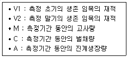
42. 다음과 같은 그림으로 분석이 가능한 임분구조가 아닌 것은?
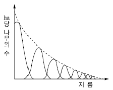
43. 산림문화⋅휴양에 관한 법률에 의한 산림문화 자산에 대한 설명으로 다음 ( ) 안에 들어갈 내용으로 옳지 않은 것은?
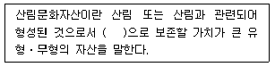
44. 회귀년에 대한 설명으로 옳은 것은?
45. 임업소득이 5백만원이고 임가소득이 1천만원일 때 임업의존도는?
46. 수간석해에서 원판측정 방법에 해당하는 것은?
47. 임지의 평가 방법이 아닌 것은?
48. 순토측고기를 사용하여 임목의 수고를 측정할 때 올바른 계산식은?
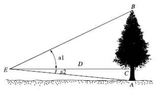
49. 임업경영의 비용을 조림비, 관리비, 지대, 채취비로 구분할 때 관리비에 속하는 것은?
50. 다음 조건에서 시장가역산식을 이용한 임목가는?
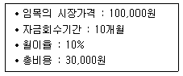
51. 투자효율의 결정방법 중 화폐의 시간적 가치를 고려하지 않는 것은?
52. 자본장비도에 대한 설명으로 옳지 않은 것은?
53. 임업이율의 성격이 아닌 것은?
54. 산림경영계획을 위한 지황조사에서 유효토심의 구분 기준으로 옳은 것은?
55. 다음 조건에서 정액법에 의한 감가상각비는?
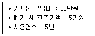
56. 평균생장량이 최대가 되는 때를 벌기령으로 결정하는 것은?
57. 우리나라 원목의 말구직경을 측정하는 방법으로 옳은 것은?
58. 다음 그림에서 이익에 해당하는 것은?
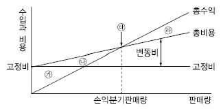
59. 총생장량, 평균생장량, 연년생장량간의 관계에 대한 설명으로 옳지 않은 것은?
60. 자연휴양림 안에 설치할 수 있는 시설의 종류가 아닌 것은?
4과목: 임도공학
61. 임도시공 시 굴착 및 운반작업 수행이 가장 어려운 장비는?
62. 임도의 유지관리를 위한 시설에 대한 설명으로 옳은 것은?
63. 산악지대의 임도망 구축에 있어 지형에 대응한 노선선정 방식에 대한 설명으로 옳지 않은 것은?
64. 임도의 대피소 설치 기준으로 옳은 것은?
65. 임도공사 시 기초작업에서 지반의 허용지지력이 가장 큰 것은?
66. 임도의 평면선형에서 곡선을 설치하지 않아도 되는 기준은?
67. 1,000ha의 산림경영지에 적정임도밀도가 20m/ha라 한다면 평균집재거리는?
68. 임도의 종류별 설계속도 기준으로 옳은 것은?
69. 임도의 노체를 구성하는 기본적인 구조가 아닌 것은?
70. 토사지역에서 절토 경사면의 설계 기준은?
71. 레벨을 이용한 고저측량 시 기고식야장법에 의한 지반고를 구하는 방법은?
72. 임도 설계 시 횡단면도를 작성하는 기준 축척은?
73. 산림의 경계선을 명백히 하고 그 면적을 확정하기 위해 실시하는 측량은?
74. 임도의 곡선반지름이 30m, 설계속도가 30km/h일 때 자동차의 원활한 통행을 위한 완화구간의 길이는?
75. 옹벽에 대한 설명으로 옳지 않은 것은?
76. 가선집재와 비교하여 트랙터를 이용한 집재작업의 특징으로 거리가 먼 것은?
77. 모르타르뿜어붙이기공법에서 건조⋅수축으로 인한 균열을 방지하는 방법이 아닌 것은?
78. 산지 경사면과 임도 시공기면과의 교차선으로 임도시공 시 절토와 성토작업을 구분하는 경계선은?
79. 임도의 횡단선형을 구성하는 요소가 아닌 것은?
80. 측선 AB의 방위각이 45°, 측선 BC의 방위각이 130°일 때 교각은?
5과목: 사방공학
81. 황폐계류에 대한 설명으로 옳지 않은 것은?
82. 유역면적이 5km2이고, 비유량이 12m3/sec/km2일 때 최대홍수유량은?
83. 찰쌓기에서 지름 약 3cm의 PVC파이프로 물빼기구멍을 설치하는 기준은?
84. 계상에서 유수의 소류력이 최소로 되고 안정기울기가 최대로 되는 기울기는?
85. 황폐지 및 훼손지의 복구용 수종으로 가장 적합한 것은?
86. 계류의 유속과 흐름방향을 조절할 수 있도록 둑이나 계안으로부터 돌출하여 설치하는 것은?
87. 비탈면에서 분사식씨뿌리기에 사용되는 혼합재료가 아닌 것은?
88. 산사태의 발생 원인에서 지질적 요인이 아닌 것은?
89. 평균유속 0.5m/s로 5초 동안에 10m3의 물을 유송하는 수로의 횡단면적은?
90. 땅깎기 비탈면의 안정과 녹화를 위한 시공 방법으로 옳지 않은 것은?
91. 사방사업 대상지 유형 중 황폐지에 속하는 것은?
92. 다음 설명에 해당하는 산지사방 공법은?
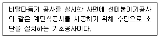
93. 화성암은 화학적으로 어떤 성분함량에 따라 산성암, 중성암, 염기성암으로 구분되는가?
94. 사방댐에서 대수면에 해당하는 것은?
95. 사방댐에 설치하는 물받침에 대한 설명으로 옳지 않은 것은?
96. 해안사방에서 사초심기공법에 관한 설명으로 옳지 않은 것은?
97. 비탈다듬기공사를 설계할 때 유의사항으로 옳지 않은 것은?
98. 선떼붙이기공법을 1급부터 9급까지 구분하는 기준은?
99. 강우에 의해 토층이 포화상태가 되어 경사지 전면에 걸쳐 얇은 층으로 흙 입자가 이동하는 침식은?
100. 파종녹화공법에서 파종량(W)을 구하는 식으로 옳은 것은? (단, S : 평균입수, P : 순량율, B : 발아율, C : 발생기대본수)
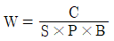
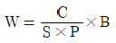
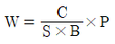